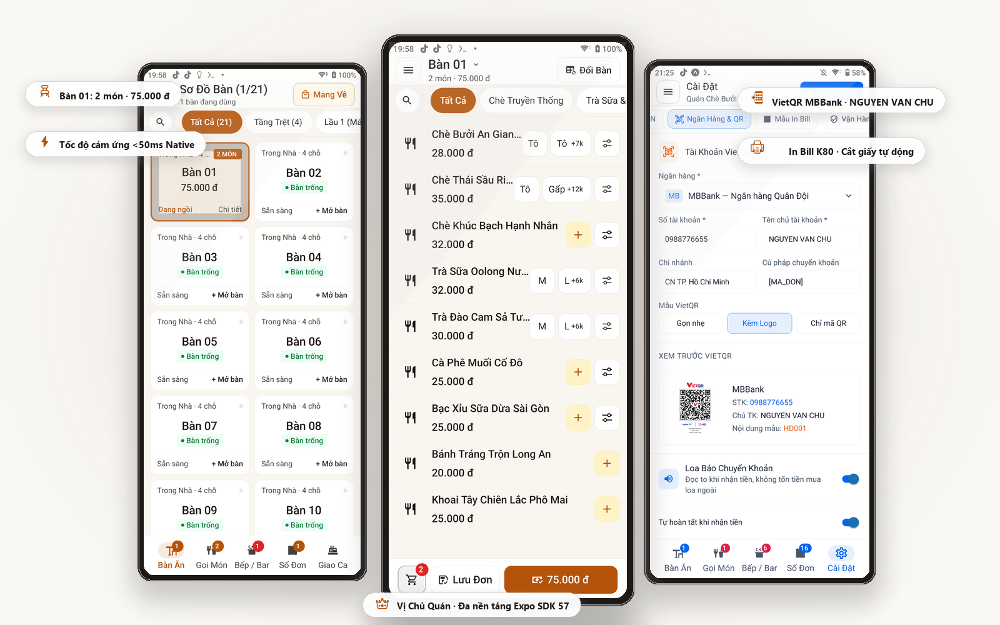
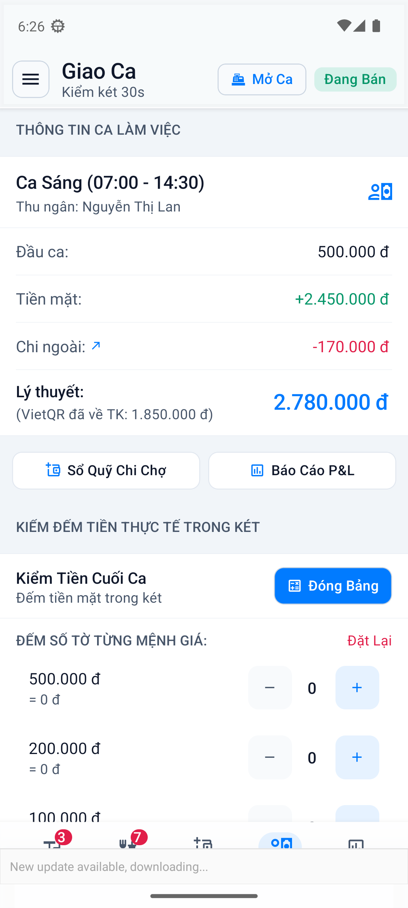
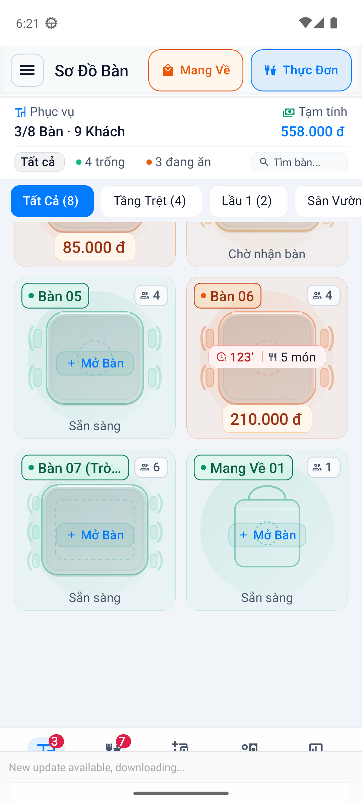
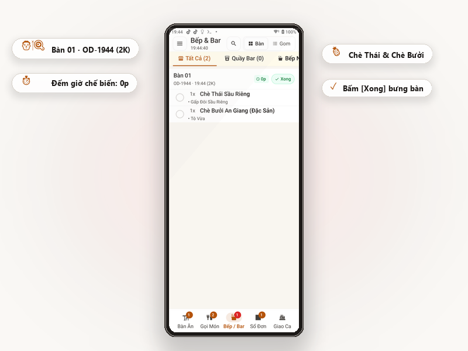
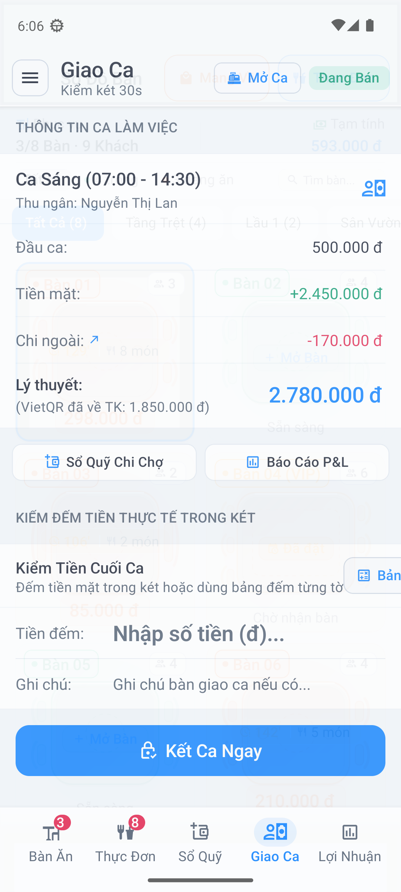
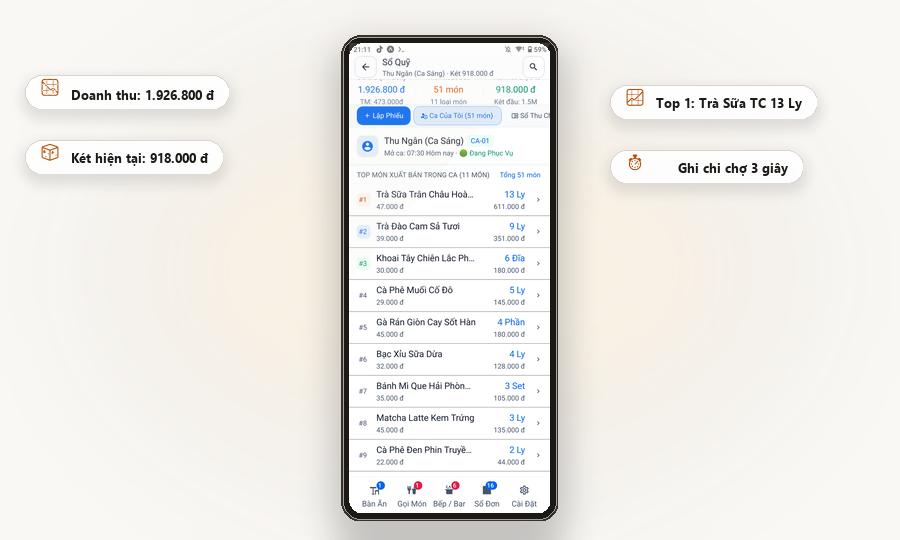
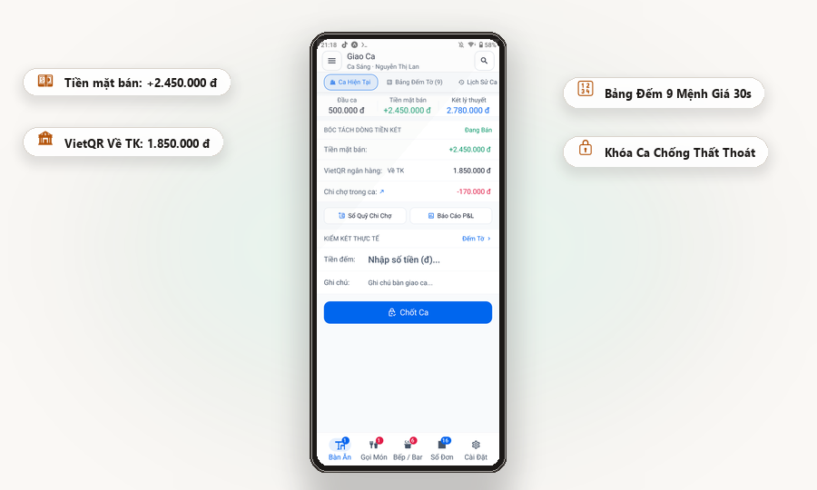
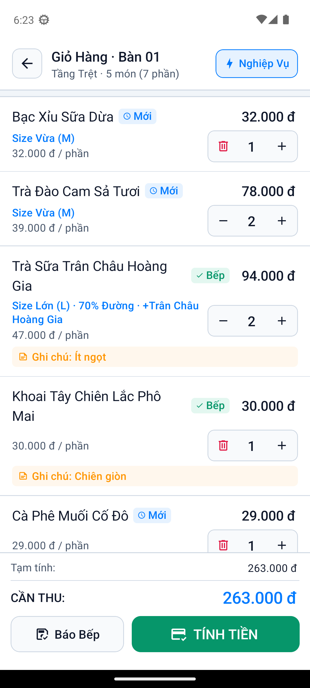
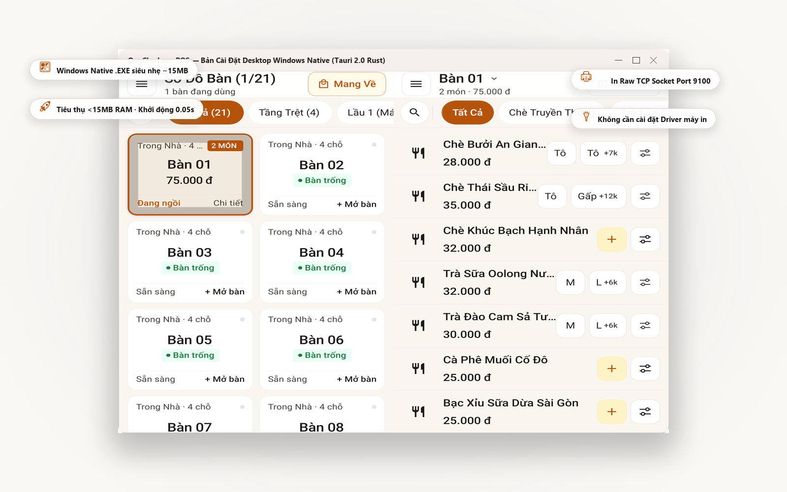

POS F&B thực chiến
cho quán của bạn.
Bán hàng nhanh, quản lý tiền rõ ràng và vận hành quán hiệu quả — ngay cả khi Internet gặp sự cố.

Chủ quán không cần thêm một hệ thống phức tạp.
Cần một hệ thống giúp quán vận hành rõ ràng hơn.
Loại bỏ các tính năng thừa thãi rắc rối, tập trung giải quyết triệt để 3 nỗi lo lớn nhất của người làm F&B.
Kiểm soát tiền thu chi
- Sổ quỹ chi chợ 3 giây ngay trên máy thu ngân.
- Giao ca đếm két 30 giây tính tiền chênh lệch.
- Tách bạch tiền mặt trong két và tiền VietQR tài khoản.
Kiểm soát hao hụt kho
- Định lượng nguyên liệu (BOM) trừ kho tự động khi bán món.
- Cảnh báo sắp hết nguyên liệu trọng yếu trước giờ cao điểm.
- Phiếu nhập xuất kho nhà cung cấp rõ ràng, minh bạch.
Order & Chế biến mượt mà
- Thao tác chọn món < 1 giây, giỏ hàng cảm ứng 60 FPS.
- Màn hình KDS bếp/bar nhận lệnh realtime qua WebSocket.
- Hoạt động độc lập 100% khi rớt mạng nhờ Offline-First.
Quy trình vận hành 8 bước tinh gọn
Từ lúc khách bước vào gọi món đến khi kết ca đếm két, mọi mắt xích đều liên kết chặt chẽ và lưu vết dữ liệu an toàn.
Nhân viên mở sơ đồ bàn, chọn món, chọn size, mức đường đá và topping 1-chạm.
Đơn hàng được chốt trên POS, tự động đồng bộ giỏ hàng đa thiết bị trong quán.
Màn hình Bếp/Bar lập tức nhận phiếu chế biến theo thứ tự thời gian gọi.
Đầu bếp chạm hoàn tất, hệ thống thông báo nhân viên phục vụ mang món cho khách.
Quét mã VietQR động tự điền số tiền hoặc nhận tiền mặt, in hóa đơn nhiệt tức thì.
Ghi nhanh các khoản chi mua đá, rau, thịt trong ngày trong 3 giây để trừ két.
Thu ngân đếm tiền thực tế, hệ thống tự đối soát với doanh thu và tiền chi trong ca.
Chủ quán xem tức thì 3 con số vàng: Doanh thu, Chi phí giá vốn và Lợi nhuận thực tế.
Chủ quán không cần ngồi cả ngày
để biết tình hình quán thế nào.
Số liệu tài chính chuẩn xác được tinh gọn thành 3 chỉ số cốt lõi, giúp bạn ra quyết định kinh doanh trong vài giây.
Mở ứng dụng nắm ngay số bàn đang phục vụ, doanh thu giờ cao điểm và món đang chờ bếp chế biến.
Đối soát nhanh số tiền mặt trong két với tiền chuyển khoản ngân hàng VietQR mà không cần cộng sổ tay.
Báo cáo P&L phản ánh trực diện lợi nhuận thực sau khi đã trừ chi phí nguyên liệu và các khoản chi phát sinh.

Sản phẩm thực tế. Trải nghiệm trực quan.
Không dùng hình ảnh vẽ dựng ảo. Toàn bộ tính năng dưới đây được chụp trực tiếp từ hệ thống OngChu POS đang vận hành.
POS tốc độ cao, giỏ hàng đa bàn
Giao diện phân chia danh mục thông minh, hỗ trợ tùy biến size, topping, ghi chú món và chuyển đổi bàn phục vụ tức thì.
Sơ đồ bàn trực quan
Theo dõi trạng thái bàn trống, bàn có khách, bàn đang chờ tính tiền theo thời gian thực.

Màn hình KDS Báo Bếp
Hiển thị đơn gọi theo thời gian thực, đồng hồ đếm thời gian chế biến, phân loại món theo quầy.

VietQR động & In nhiệt ESC/POS Direct Socket
Sinh mã QR động chính xác số tiền, kết nối máy in nhiệt LAN Port 9100 tốc độ cao, kích mở két tiền RJ11 tự động.

Ghi nhận chi chợ 3 giây
Ghi nhận tức thì các khoản chi tiền mặt mua đá, rau củ, gas, phụ phí ngay tại quầy thu ngân để trừ két chính xác.

Giao ca đếm két 30s & Báo cáo P&L
Tự động tính toán số dư kỳ vọng, phát hiện chênh lệch tiền mặt cuối ca và tổng kết 3 con số vàng lợi nhuận.

Bán hàng vững vàng ngay cả khi mất mạng
Không lo đứt cáp, mất Wi-Fi hay nghẽn mạng giờ cao điểm. OngChu POS lưu trữ dữ liệu tại máy và tự động đồng bộ khi có kết nối trở lại.
Đồng bộ đa điểm thời gian thực
Bán hàng độc lập qua SQLite & LAN
Tương thích mọi thiết bị quán đang có
Không ép buộc đầu tư máy móc đắt tiền. Tận dụng điện thoại, máy tính bảng hoặc máy tính sẵn có tại quán.
Android Native Tối Ưu Cảm Ứng
Hỗ trợ đầy đủ các dòng máy POS cầm tay (Sunmi, iMin), điện thoại Android và Tablet từ nhỏ đến lớn với thao tác 1-chạm mượt mà 60 FPS.
- Chạy mượt trên thiết bị cấu hình phổ thông.
- Kết nối trực tiếp máy in Bluetooth, Wi-Fi và LAN.
- Phản hồi xúc giác Haptics khi chạm phím.
iPad & iPhone Mượt Mà Sang Trọng
Giao diện được tinh chỉnh theo ngôn ngữ Human Interface hiện đại, tối ưu không gian màn hình Retina sắc nét cho quầy thu ngân cao cấp.
- Trải nghiệm thị giác ngà giấy dó chống lóa mắt.
- Cài đặt tức thì dạng PWA hoặc TestFlight nội bộ.
- Thích hợp quán Cafe, Nhà hàng phong cách hiện đại.

Nền Tảng Web PWA Không Cần Cài Đặt
Chạy trực tiếp trên Google Chrome, Edge, Safari hoặc Firefox. Mở trình duyệt đăng nhập là bắt đầu bán hàng ngay lập tức.
- Không cần cài đặt phần mềm phức tạp.
- Tự động cập nhật phiên bản mới nhất trên Cloud.
- Truy cập an toàn qua giao thức HTTPS chuẩn bảo mật.
Bản Cài Windows Native Siêu Nhẹ
Ứng dụng Desktop chuyên dụng (~15MB RAM), tích hợp sâu với hệ điều hành Windows cho quầy thu ngân cố định tại quán.
- Tải về chạy ngay không cần cấu hình (.EXE).
- Kết nối trực tiếp máy in hóa đơn cổng LAN, USB.
- Phím tắt bán hàng tiện lợi cho thu ngân.

Giải pháp chuyên sâu cho từng mô hình F&B
Thiết kế luồng thao tác phù hợp tuyệt đối với tốc độ gọi món và thói quen phục vụ của từng loại hình quán.
Quán Cafe
Tối ưu tốc độ order tại quầy, in bill tức thì, tích hợp thanh toán VietQR động và quản lý định lượng cà phê, sữa.
Xem giải pháp Cafe →Trà Sữa & Sinh Tố
Tùy biến đa dạng size, mức đường (0%, 30%, 50%), mức đá và danh sách topping phong phú mà không lo nhầm lẫn.
Xem giải pháp Trà Sữa →Quán Ăn & Cơm
Quản lý sơ đồ bàn, gộp bàn, tách bàn, báo bếp KDS realtime và sổ quỹ kiểm soát chi chợ mua thực phẩm tươi sống.
Xem giải pháp Quán Ăn →Nhà Hàng & Quán Nhậu
Quản lý nhiều khu vực bàn (tầng, phòng VIP), in phiếu tạm tính, kiểm đếm ca chặt chẽ và báo cáo phân tích món bán chạy.
Xem giải pháp Nhà Hàng →Câu hỏi thường gặp
Những thông tin cần biết để bạn an tâm triển khai OngChu POS cho quán của mình.
Hệ thống được thiết kế chuyên biệt cho Quán Cafe, Trà Sữa, Quán Ăn, Quán Cơm, Quán Nhậu, Nhà Hàng và Bakery cần tốc độ bán hàng nhanh và quản lý dòng tiền chặt chẽ.
Có. Nhờ kiến trúc Offline-First lưu trữ SQLite cục bộ và in nhiệt ESC/POS qua mạng LAN, bạn vẫn tạo đơn, in hóa đơn và mở két bình thường. Khi có mạng trở lại, dữ liệu tự động đồng bộ lên máy chủ.
Bạn có thể dùng điện thoại Android, iPhone, iPad, máy tính bảng, máy POS cảm ứng và máy tính Windows. Máy in nhiệt khổ K80/K58 kết nối cổng LAN/Wi-Fi hoặc USB đều được hỗ trợ trực tiếp.
Có. Màn hình KDS nhận lệnh gọi món thời gian thực từ máy thu ngân qua WebSocket, phân loại món theo quầy pha chế hoặc bếp nấu và cho phép đầu bếp chạm đổi trạng thái khi chế biến xong.
Hệ thống tự động sinh mã VietQR động chứa chính xác số tiền cần thanh toán và mã hóa đơn. Khách hàng quét mã trên ứng dụng ngân hàng và thanh toán mà không cần nhập số tiền thủ công.
Sổ quỹ ghi nhận các khoản chi mua đá, rau củ ngay trong ngày chỉ mất 3 giây. Cuối ca, tính năng giao ca 30 giây đối soát chính xác số tiền mặt trong két với tiền bán thực tế để phát hiện chênh lệch ngay lập tức.
Toàn bộ dữ liệu được mã hóa SSL/TLS trên đường truyền, xác thực JWT phân quyền theo từng cửa hàng (Multi-Tenant Isolation) và lưu vết Audit Log cho các tác vụ quan trọng như hủy món hay giảm giá.
Chỉ cần bấm nút "Vào bán hàng" trên website để sử dụng ngay trên trình duyệt hoặc tải ứng dụng về máy tính/điện thoại để bắt đầu tạo thực đơn và bán hàng trong 5 phút.
Quản lý quán nhẹ đầu hơn.
Tập trung vào chất lượng món và chăm sóc khách hàng. Để OngChu hỗ trợ phần vận hành và kiểm soát tài chính chuẩn xác.